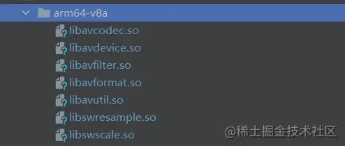
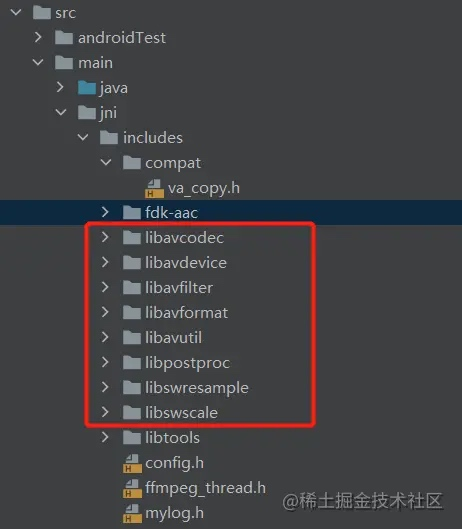
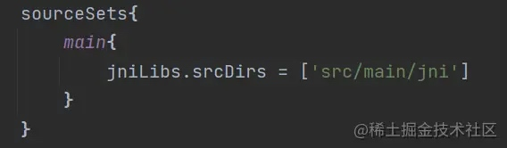
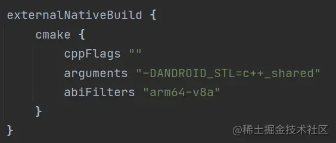
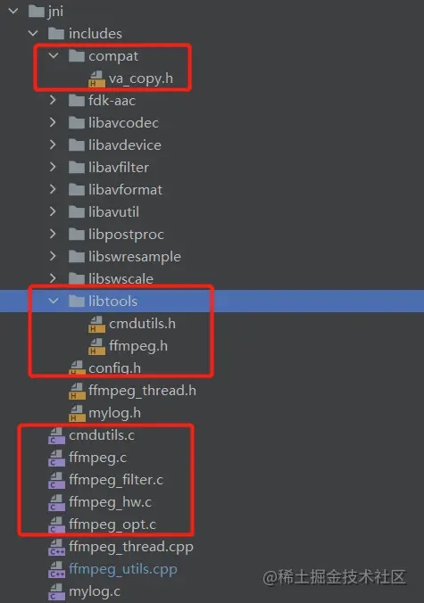

引入FFmpeg相关库
module libs目录下新建arm64-v8a文件夹，将生成的so文件拷入。
 - 在
module src/main目录下新建jni文件夹，并在jni文件夹下新建一个includes的文件夹，将交叉编译android目标目录下的include文件夹中的头文件拷贝进此文件夹。
 - 打开
module下的build.gradle文件，在android闭包中添加以下内容，指定工程的jni目录。

在android闭包中的defaultConfig闭包中增加以下内容：

abiFilters的内容请根据工程实际需要自行修改。
引入命令行工具相关代码
- 从FFmpeg的源码中复制以下红框圈出来的文件分别到includes文件夹和jni文件夹中,具体如图所示：
 - 对部分文件里的内容做替换：
-
ffmpeg.c把int main(int argc, char **argv)修改为int run(int argc, char **argv),并删除函数中的return语句。将run函数里的所有的exit_program调用修改为return exit_program。
在run函数最后一条return语句前加入如下代码：
nb_filtergraphs = 0; progress_avio = NULL; input_streams = NULL; nb_input_streams = 0; input_files = NULL; nb_input_files = 0; output_streams = NULL; nb_output_streams = 0; output_files = NULL; nb_output_files = 0; -
ffmpeg.h 在文件末尾添加函数声明：
int run(int argc, char **argv); -
cmdutils.c
void exit_program(int ret){ if (program_exit) program_exit(ret); exit(ret); }修改为
int exit_program(int ret) { return ret; } -
cmdutils.h
void exit_program(int ret) av_noreturn;修改为int exit_program(int ret);
-
重定向Log的输出
由于FFmpeg使用的默认为控制台log，在Android设备上将无法正常预览打印的日志，因此我们需要对FFmpeg的log输出做一些修改。
- 各新建一个mylog.h和mylog.c文件，内容分别如下：
- cmdutils.h
#include <android/log.h> #ifndef LOG_TAG #define LOG_TAG "FFMPEG" #endif #define LOGI(...) __android_log_print(ANDROID_LOG_INFO,LOG_TAG,__VA_ARGS__) #define LOGE(...) __android_log_print(ANDROID_LOG_ERROR,LOG_TAG,__VA_ARGS__) void log_callback_null(void *ptr, int level, const char *fmt, va_list vl);- cmdutils.c
#include <libavutil/log.h> #include "mylog.h" void log_callback_null(void *ptr, int level, const char *fmt, va_list vl) { static int print_prefix = 1; static int count; static char prev[1024]; char line[1024]; static int is_atty; av_log_format_line(ptr, level, fmt, vl, line, sizeof(line), &print_prefix); strcpy(prev, line); //sanitize((uint8_t *)line); if (level <= AV_LOG_WARNING) { LOGE("%s", line); } else { LOGI("%s", line); } } - 新建一个JNI文件
ffmpeg_utils.cpp，并在JNI_OnLoad方法中添加以下代码
av_log_set_callback(log_callback_null);
这样当VM执行到C层代码时，首先初始化日志的输出方式。
CMake的配置
在module 下新建一个CMakeLists.txt文件,加入以下代码：
#指明了对cmake的最低版本的要求为 3.4.1
cmake_minimum_required(VERSION 3.4.1)
#指定工程名为native_lib,可自行更改，编译完成后最终会生成一个名为libnative_lib.so的库。
project(native_lib)
#使用C++ 11编译
set(CMAKE_CXX_STANDARD 11)
#指定头文件路径
set(CMAKE_INCLUDE_PATH ${CMAKE_SOURCE_DIR}/src/main/jni/includes)
include_directories(${CMAKE_INCLUDE_PATH})
#将要编译的文件加入
add_library(native_lib
SHARED
src/main/jni/ffmpeg_utils.cpp
src/main/jni/mylog.c
src/main/jni/cmdutils.c
src/main/jni/ffmpeg.c
src/main/jni/ffmpeg_hw.c
src/main/jni/ffmpeg_filter.c
src/main/jni/ffmpeg_opt.c
)
set(libs "${CMAKE_SOURCE_DIR}/libs/arm64-v8a")
function(buildlib)
add_library(avcodec SHARED IMPORTED)
set_target_properties(avcodec PROPERTIES IMPORTED_LOCATION ${libs}/libavcodec.so)
add_library(avdevice SHARED IMPORTED)
set_target_properties(avdevice PROPERTIES IMPORTED_LOCATION ${libs}/libavdevice.so)
add_library(avfilter SHARED IMPORTED)
set_target_properties(avfilter PROPERTIES IMPORTED_LOCATION ${libs}/libavfilter.so)
add_library(avformat SHARED IMPORTED)
set_target_properties(avformat PROPERTIES IMPORTED_LOCATION ${libs}/libavformat.so)
add_library(avutil SHARED IMPORTED)
set_target_properties(avutil PROPERTIES IMPORTED_LOCATION ${libs}/libavutil.so)
add_library(swresample SHARED IMPORTED)
set_target_properties(swresample PROPERTIES IMPORTED_LOCATION ${libs}/libswresample.so)
add_library(swscale SHARED IMPORTED)
set_target_properties(swscale PROPERTIES IMPORTED_LOCATION ${libs}/libswscale.so)
endfunction()
buildlib()
set(ffmpeg avcodec avdevice avfilter avformat avutil swresample swscale)
#连接库
target_link_libraries(native_lib ${ffmpeg} log)
到此为止，我们已经完成了FFmpeg命令行的集成工作，下面我们来看看，如何用FFmpeg命令行来实现一个简单的音频转码工作。
实现音频转码
在实现音频转码工作前，我们首先要解决一个问题：Android 10启用了新的文件沙盒机制，应用只能访问自己沙盒下的文件和公共媒体文件，而FFmpeg是通过文件的绝对路径去打开文件的，这意味着我们必须对FFmpeg进行改造，才能使FFmpeg在Android 10上正常工作。
首先我们来看看，如何在android 10上访问媒体文件。
在Android 10上，我们可以通过以下方法根据媒体文件的URI,获得媒体文件的文件描述符:
contentResolver.openFileDescriptor(uri, "r")
现在我们的目标是，让FFmpeg能够支持文件描述符的方式去打开文件。
为了标识传递给FFmpeg的路径是一个文件描述符，我们给文件描述符加上一个特定的前缀作标识，比如：
"file_fd:12"
这串地址表示一个文件描述符为12的文件。
紧接着让我们在FFmpeg的源码中打开libavformat文件夹下的file.c文件，找到file_open这个函数，其需要修改的代码如下所示：
av_strstart(filename, "file:", &filename);
if (flags & AVIO_FLAG_WRITE && flags & AVIO_FLAG_READ) {
access = O_CREAT | O_RDWR;
if (c->trunc)
access |= O_TRUNC;
} else if (flags & AVIO_FLAG_WRITE) {
access = O_CREAT | O_WRONLY;
if (c->trunc)
access |= O_TRUNC;
} else {
access = O_RDONLY;
}
#ifdef O_BINARY
access |= O_BINARY;
#endif
fd = avpriv_open(filename, access, 0666);
我们给他增加一段逻辑，如果filename以"file_fd:"开头，则使用描述符的方式打开文件：
char* fds;
av_strstart(filename, "file:", &filename);
if(av_strstart(filename,"file_fd:",&fds)){
fd = atoi(fds);
av_log(NULL,AV_LOG_INFO,"set fd %d",fd);
}else{
if (flags & AVIO_FLAG_WRITE && flags & AVIO_FLAG_READ) {
access = O_CREAT | O_RDWR;
if (c->trunc)
access |= O_TRUNC;
} else if (flags & AVIO_FLAG_WRITE) {
access = O_CREAT | O_WRONLY;
if (c->trunc)
access |= O_TRUNC;
} else {
access = O_RDONLY;
}
#ifdef O_BINARY
access |= O_BINARY;
#endif
fd = avpriv_open(filename, access, 0666);
}
然后重新编译，生成新的so文件进行替换。
在上述处理后，我们可以尝试利用FFmpeg的命令行做音频格式转换的操作了，示例中是将音频转换为flac格式的文件。
- 定义一个类，用于存储音频转换的参数：
data class AudioParseOption(
val sampleRate : Int = 44100,
val bitRate : Int = 320,
val channel : Int = 1
)
- 新建一个名为
FFmpegUtils.kt的类，作为java 和 c层之间的桥梁：
object FFmpegUtils {
fun parseToFlac(srcPath : String,destPath : String,
option : AudioParseOption) : Int{
val cmds = "ffmpeg -i ${srcPath} -c flac -b:a ${option.bitRate}" +
" -ar ${option.sampleRate} ${destPath}"
val cmdArr = cmds.split(" ").let {
list->
Array(
list.size,
){
list[it]
}
}
return execCmd(cmdArr)
}
private external fun execCmd(cmd : Array<String>) : Int
init {
System.loadLibrary("native_lib")
}
}
- 在ffmpeg_utils.cpp文件中实现jni的代码：
JNIEXPORT jint JNICALL
Java_com_roj_formatfactory_FFmpegUtils_execCmd(JNIEnv *env, jobject jclazz,jobjectArray jarray) {
int length = env->GetArrayLength(jarray);
const char** cmds = new const char*[length];
for(int i=0;i< length; i++){
auto item = (jstring)env->GetObjectArrayElement(jarray,i);
const char* cmdItem = env->GetStringUTFChars(item,0);
cmds[i] = cmdItem;
}
int result = run(length,cmds);
for(int i=0;i< length; i++){
auto item = (jstring)env->GetObjectArrayElement(jarray,i);
env->ReleaseStringUTFChars(item,cmds[i]);
}
return result;
}
这样，我们便能实现音频转码的功能了。上述的模板也是一套万能的模板，只需要对命令行里的内容稍作改动，就能够实现FFmpeg命令行支持的所有内容，比如视频添加水印、音视频分离、视频截图等功能。